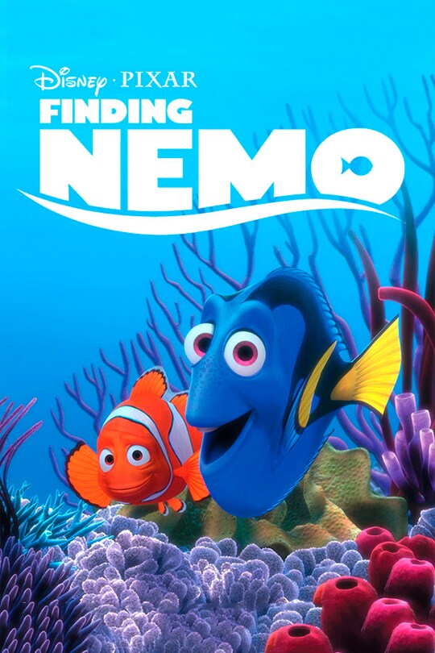

Birthdate: July 22, 1947
Nationality: American
Awards: Golden Globe nomination
Known For: Drive, Broadcast News, Modern Romance
Note: Improvised a significant amount of Marlin's nervous dialogue during recording sessions
Birthdate: January 26, 1958
Nationality: American
Awards: Presidential Medal of Freedom
Known For: Ellen DeGeneres Show, Finding Dory
Note: Director Andrew Stanton wrote Dory specifically after watching DeGeneres's talk show
Birthdate: May 4, 1994
Nationality: American
Known For: Weeds (TV), Finding Nemo
Note: Was nine years old when he recorded the role; the process took over a year
Birthdate: July 22, 1955
Nationality: American
Awards: Four Academy Award nominations
Known For: Platoon, Shadow of the Vampire, At Eternity's Gate
Note: His distinctive voice gave Gill an authority that felt genuinely earned within the tank
Birthdate: February 7, 1940
Nationality: Australian
Awards: Australian Film Institute Award
Known For: Muriel's Wedding, Strictly Ballroom
Note: The address 42 Wallaby Way Sydney became one of cinema's most memorized running gags